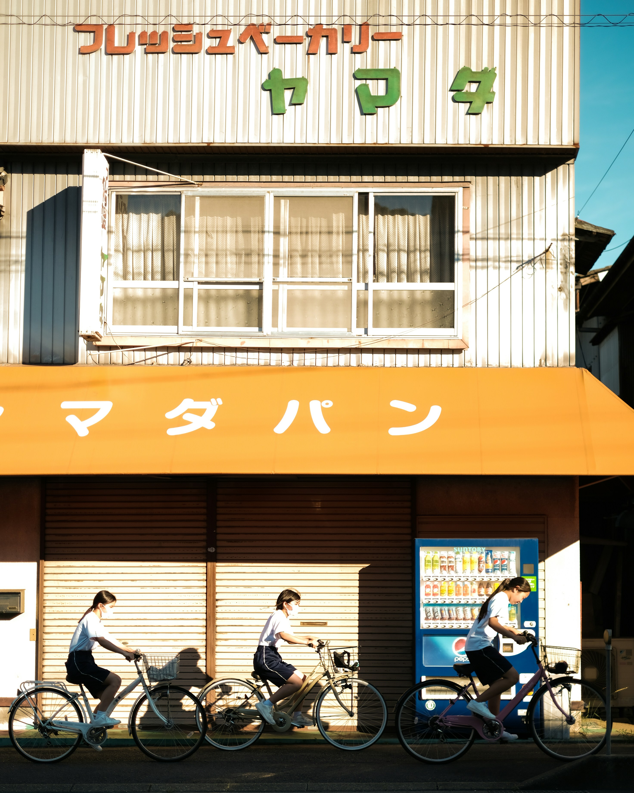
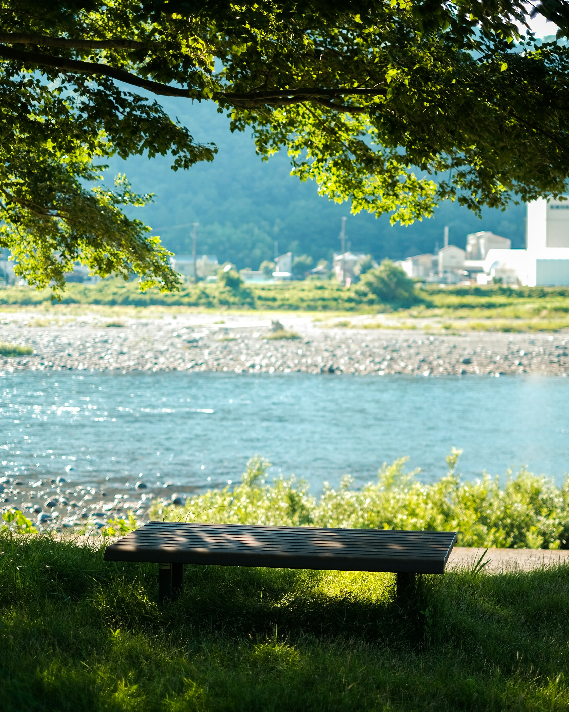
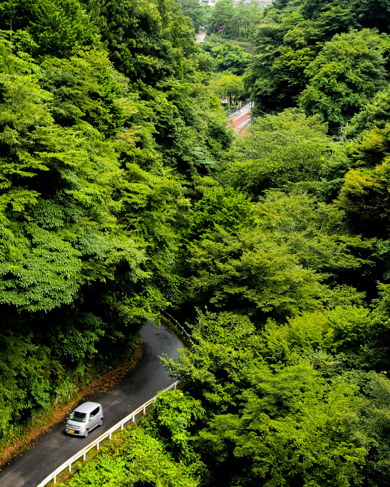

Experience the tranquil beauty of Japan’s landscapes—from peaceful temples to vibrant cherry blossoms. Enjoy a visual journey through the country’s most serene outdoor scenes.

Senso-ji Temple in spring.

Golden ginkgo tree in autumn.
Tokyo Skytree and cherry blossoms.

Cycling past a local bakery.

Riverside peace in the city.

Road through lush forest.